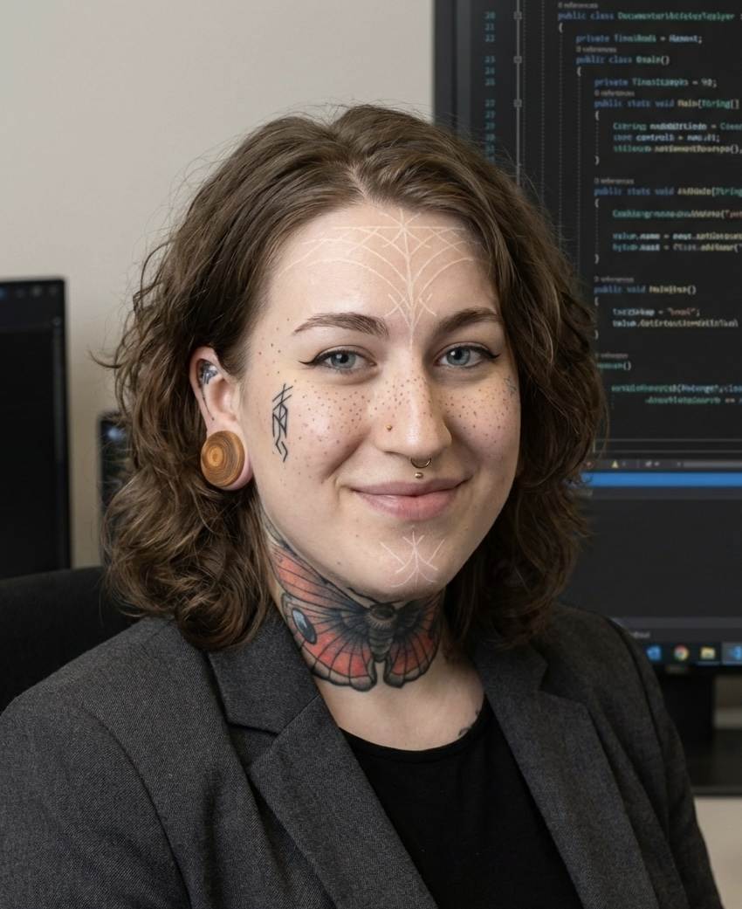

Resume

E.R. Mariesdotter
System Developer
Fullstack .NET Systems Developer student at Chas Academy with a strong focus on engineering data-intensive applications. Driven by a philosophy of 'evolvability'—writing clean, well-planned code that is scalable for current data loads and highly adaptable for the future. Highly collaborative developer who thrives in team environments, rooted in the belief that the most robust architectural solutions stem from Agile workflows and continuous peer learning. Dedicated to fostering a culture of technical excellence and shared growth, both when building backend logic and when advocating for peer interests at the board level.
Expertise
Life experience
With a decade of professional experience in high-stakes, highly educated environments, I bring a level of maturity and strategic thinking that goes beyond just syntax. I understand the lifecycle of long-term projects, the importance of living up to peers and manager expectations, and the resilience required to navigate complex organizational challenges.
Communication
Communication in a clinical and academic setting is a matter of safety and success. Having served as a lecturer, teacher and mentor, I excel at distilling intricate, high-level concepts into digestible, actionable information. Whether I am documenting a complex codebase or collaborating with cross-functional teams, my goal is to foster a 'clinical' level of clarity and common ground, that eliminates ambiguity and drives project (and team) health.
Flexibility | Evolvability
The transition from clinical medicine to software engineering is a testament to my adaptability. I treat my technical stack with the same rigor I applied to medical advancements: staying current with emerging research and rapidly integrating new methodologies. My 'modular' approach to learning allows me to map programmatic logic onto my existing foundation of biological systems thinking, making me a fast-acting and versatile problem solver.
Personal drive
I’ve always been driven by a quiet, disciplined commitment to doing things in a good way. There is a deep satisfaction in taking a complex, messy problem and refining it into a clean, functional solution. For me, this is about more than just persistence; it’s about a personal joy. I aim to understand a problem - and it's solution - fully, ensuring that every project I contribute to is built on a foundation of quality and long-term stability.
Skills
Communication
Teamwork
Solo working
Adaptability
Coding
Tech Education
Fullstack Developer .NET C#
2027 | Chas Academy, Stockholm
Currently undergoing a formal education to become a fully fledged fullstack developer. Undergoing 2 Years of full time studies working on projects individually and in teams, both within my specific tech stack, and beyond class borders, with students from other educations. I am also serving as the class representative of NET25, acting as mouthpiece for my class at quarter-annually board meetings - focusing on making sure every member of class gets their voice heard.
Foundational C#
2025 | Microsoft Learn
Completed several courses in HTML, CSS, JS vanilla, C and C# in early and mid 2025 to prepare for my studies at Chas Academy. Gained a solid foundation in web development and programming concepts, which helped me hit the ground running when I started my formal education.